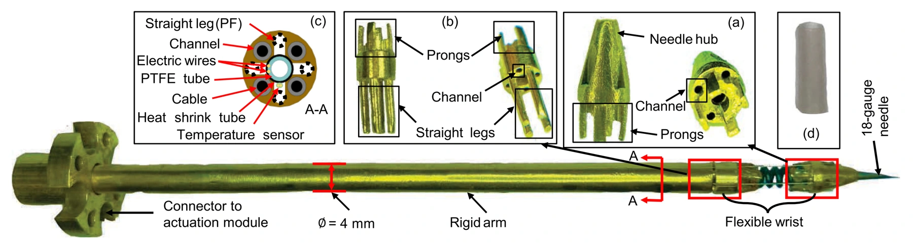

A variable-stiffness wrist for ultrasound-guided pericardiocentesis
A small variable-stiffness wrist allows the tip of a percutaneous robot to bend after insertion.

I contributed to a handheld percutaneous robot with a 4 mm, two-degree-of-freedom wrist. The SMA spring in the wrist changes stiffness to support insertion and subsequent tip steering. We modeled the wrist kinematics and demonstrated insertion and bending under ultrasound guidance in a two-layer gelatin phantom.